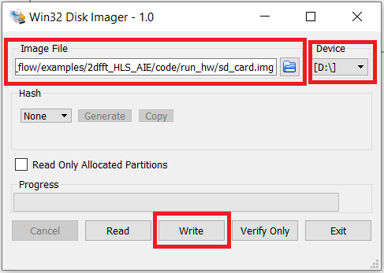
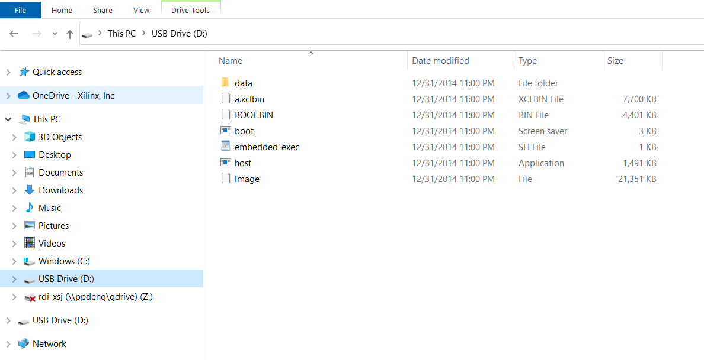
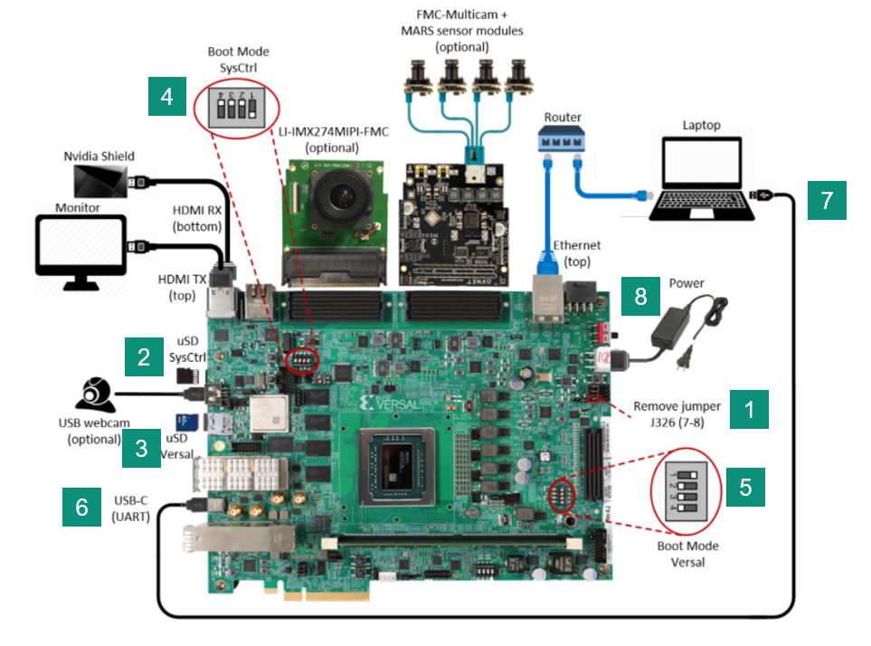
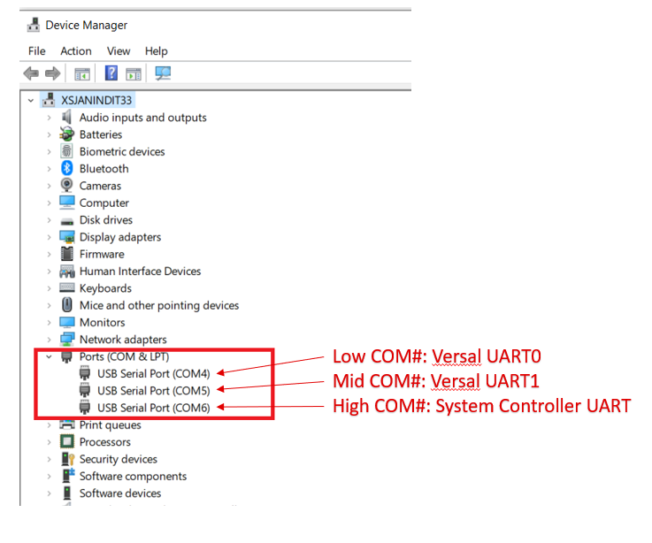
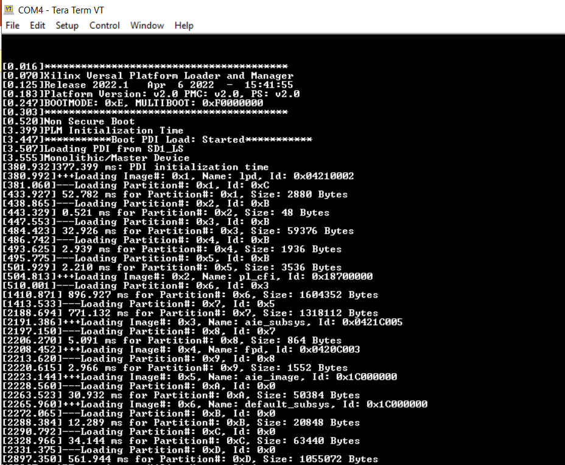
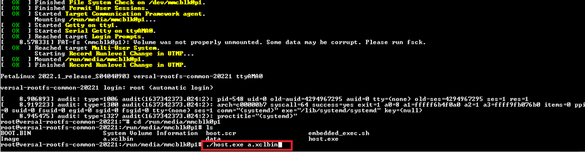

Introduction
If you have a local vck190 evaluation board connected to your Windows machine, this page provides the instructions on how to test the generated hardware image on the local board.
Prerequisites
- An sd_card.img file, generated by ModelComposer for the design to be tested on board
- VCK190 Evaluation board
- System Controller SD Card : may already be available with the board and plugged in.
- VCK190 SD card : may already be available with the board. This is the card, where you will write the sd_card.img file generated for your design
- Terminal emulator, for example
- Windows: teraterm (https://osdn.net/projects/ttssh2)
- Windows: Win32 Disk Imager utility (https://sourceforge.net/projects/win32diskimager)
Write sd_card.img On Micro SD Card
- Connect uSD card to your laptop. If your laptop does not come with a uSD card reader slot, an USB-to-uSD card-reader may be used, assuming laptop has a USB port
- Launch Win32 Disk Imager utility in 'Run as administrator mode'
- Under 'Image File', browse to the location where sd_card.img has been generated
- Choose the correct SD card reader drive letter under 'Device'
- Click 'Write' button

- After writing the uSD card, you should be able to see its content from Windows File Explorer within the drive corresponding to the uSD card

Board Setup
This is a onetime setup and the board should have been delivered to you with this default switch settings, but it is good to double check for the first time when you get the board. Also, make the connection from board to laptop and power cable connection to the board.

- Remove J326 (7-8) jumper(ref. 1 in above picture)
- Make sure you have the SYSCTRL uSD card inserted in the slot and card has the SYSCTRL image. (ref. 2 in above picture)
- Insert the Versal uSD card in its slot (ref. 3 in above picture)
- Setup SYSCTRL Boot mode switch SW11 to (ON,OFF,OFF,OFF) from switch bits 1 to 4 (ref. 4 in above picture)
- Setup Versal Boot Mode switch SW1 to (ON,OFF,OFF,OFF) from switch bits 1 to 4 (ref. 5 in above picture)
- Connect the USB-UART cable to the UART port on the board and USB port on your laptop (ref. 6 and 7 in above picture)
- Connect the power brick to an AC outlet and the DC output to J16 on the VCK190 board (ref. 8 in above picture)
Run Design
- Open a terminal emulator like Tera Term on the Windows10 machine and establish a connection to a serial device by selecting “Serial”.

There should be at least 3 COM ports available (depending on the PC). Note: the VCK190 board does not need to be powered on at this time. Note that the COM port numbers may be different from that shown above. The 3 COM ports may be verified by viewing “Ports (COM & LPT)” in Device Manager. Note: when the USB cable is not connected, “Ports (COM & LPT)” may not be shown in Device Manager.

In TeraTerm, select the low COM number (Versal UART0, COM4 in this example) and click OK
- From TeraTerm, select Setup → Serial port and then specify the speed to 115200 bps


Turn on board power by switching SW13 on and observe the terminal emulator. If everything goes well, boot messages should be displayed

After linux has booted, from TeraTerm terminal emulator window, type 'cd /run/media/mmcblk0p1' and hit Enter. Within this directory do an 'ls' to check the contents: it should have the BOOT.BIN, a.xclbin, data directory containing the data files among others.

- From the terminal emulator, run './host.exe a.xclbin'.

- The application will run and at the end of the test, you should see similar messages as highlighted below.